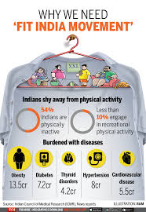

Fit India scheme was inaugurated on National Sports Day, 29th August, by the Prime Minister of India, Mr. Narendra Modi.
The day is the National Sports Day and also the birth anniversary of Major Dhyanchand; Prime Minister paid tribute to the legendary hockey player of India.
|  |
Through the dais, the Prime Minister had appealed to the citizens to adapt to a physically active schedule. He also stressed on the physical benefits of practicing yoga and that it should be an integral part of everyone’s daily routine.
"Fitness is zero percent investment with infinite returns," Modi said at the event.
At a colourful ceremony, which included a presentation of India's indigenous martial art forms, dances and sports, Modi said technology has contributed to a sedentary lifestyle.
"But with technology, physical activity has reduced. We walk less now and the same technology tells us that we are not walking enough," he added.
He also thanked the young sports personalities of India, who have won laurels for the nation and said that they are the future representing a more confident, young and fit India.
The art of practicing yoga helps in controlling an individual’s mind, body and soul. It brings together physical and mental disciplines to achieve a peaceful body and mind. It improves respiration, energy and vitality.
Regular practice of yoga can help lose weight, relieve stress, improve immunity and maintain a healthier lifestyle. Mediation also improves concentration and brings inner peace.